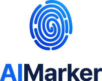

글에도
지문이 있습니다
사람이 쓴 글에도, AI로 만든 이미지와 광고에도 만들어진 흔적이 남습니다. AIMarker는 그 흔적을 확인하고, 근거에 맞게 표시하고, 기록합니다. 로고는 이 생각을 지문 하나와 두 가지 색에 담았습니다.

로고 SVG와 PNG, 색 값, 사용 안내가 함께 들어 있습니다(ZIP, 약 1.3MB).
지문 하나, 두 가지 색
로고의 세 부분은 AIMarker가 하는 일을 그대로 보여 줍니다. AIMarker를 ‘AI’와 ‘Marker’로 바로 나눠 읽을 수 있도록 두 색으로 나눴습니다.
지문 심볼
콘텐츠마다 남는 고유한 흔적입니다. 바깥에서 가운데로 모이는 결은 근거를 하나씩 따라가 확인하는 과정을 뜻합니다.
AI는 지문 블루
AI가 남긴 흔적, AIMarker가 찾아서 표시하는 것입니다. 지문과 같은 색으로 이어 씁니다. 화면에서는 누르는 것(주 단추, 링크)과 고른 것, 지금 위치에만 이 색을 씁니다.
Marker는 네이비
확인하고 표시하고 기록하는 도구입니다. 오래 믿고 쓰는 기록의 색으로, 화면의 제목과 글자도 같은 계열의 먹색을 씁니다.
로고 종류
자리에 맞는 로고를 골라 쓰세요. 모든 파일은 SVG(크기를 바꿔도 깨지지 않는 벡터)와 PNG(투명 바탕)로 받을 수 있습니다.




바탕에 맞는 색


색
로고에서 네이비는 도구(Marker), 지문 블루는 표시한 것(AI)입니다. 화면에서는 지문 블루를 누르는 것과 고른 것에만 써서, 다음에 할 일이 바로 보이게 합니다. 색 값을 누르면 복사됩니다.
검사 결과의 판정 색(부적합 빨강, 고위험 주황, 안전 초록)과 AI 검출 문장 표시(빨간 형광펜 하나)는 결과 화면에만 씁니다. 브랜드 색으로 쓰지 않습니다.
화면 규칙(디자인 시스템 11)
| 간격 | 8px 단위(4px 반 단계): 4, 8, 12, 16, 24, 32, 40, 48, 64, 80, 96, 112 |
|---|---|
| 둥글기 | 작은 것일수록 작게: 6(표, 칩), 8(단추, 입력), 12(카드, 표 상자), 16(창, 큰 화면 틀) |
| 단추 | 높이 32, 40, 48. 한 구획에 주 단추(지문 블루)는 하나, 나머지는 흰 바탕 테두리 단추나 글자 링크 |
| 입력 | 높이 44, 둥글기 8, 고르면 파란 테두리와 연한 파란 고리 |
| 글자 | Pretendard 하나. 제목 700(작은 제목 650), 본문 16px, 작은 글자는 12px 이상 |
| 선과 그림자 | 나누는 것은 1px 선, 그림자는 메뉴, 창처럼 떠 있는 것에만 |
| 움직임 | 상태가 바뀔 때만 짧게(120~180ms). 예외는 AI 마크의 은은하게 떠 있는 움직임(위아래 3px, 5~6.5초)과 첫 화면의 천천히 움직이는 빛으로, 움직임 줄이기 설정과 방문자의 멈춤을 따름. 숫자 세기, 차오름, 반짝임 같은 꾸밈 움직임은 쓰지 않음 |
글꼴은 Pretendard 하나
한글과 영문, 숫자를 모두 Pretendard 하나로 씁니다. 제목은 굵고 글자 사이를 좁게, 본문은 넉넉한 줄 간격으로 읽기 편하게 씁니다.
워드마크는 Pretendard 750을 바탕으로 글자 사이를 다듬은 윤곽입니다. 글자로 다시 쳐서 만들지 말고 로고 파일을 쓰세요.
사용 원칙
어디에 놓여도 같은 로고로 보이도록 세 가지만 지켜 주세요.
둘레 여백
로고 둘레에는 워드마크의 ‘A’ 높이만큼 비워 둡니다. 다른 글자나 그림, 화면 끝이 이 안으로 들어오지 않게 합니다.
심볼 24px최소 크기
가로형은 높이 20px(인쇄 6mm), 심볼은 높이 24px(인쇄 7mm)보다 작게 쓰지 않습니다. 파비콘처럼 그보다 작은 자리에는 단순형 심볼을 씁니다.
이렇게 쓰지 마세요
로고는 AI 마크가 아닙니다
AIMarker 로고는 회사를 소개하는 표시입니다. 콘텐츠에 붙여 AI 사용 여부를 알리거나, 인증이나 보증 표시처럼 쓰지 마세요. 콘텐츠에는 파일의 근거에 맞게 발급하는 서명된 AI 마크를 사용하세요.
로고 파일을 한 번에 받으세요
기사, 발표 자료, 제휴 소개에 쓰실 때 이 키트를 그대로 쓰시면 됩니다. 다른 용도로 쓰시려면 먼저 알려 주세요.